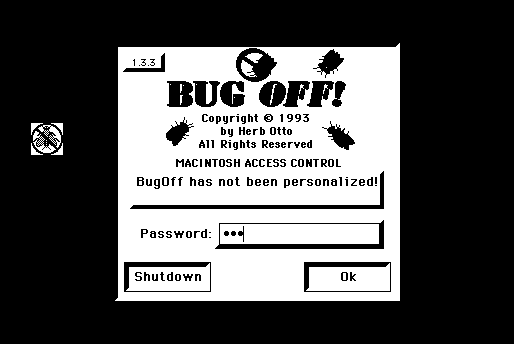

Download
BugOff-1.3.3.zip (184K) BugOff 1.3.3 repackaged into a zipped hfs disk image and checksum file. The disk image can be mounted with Mini vMac.
BugOff-1.3.3.sit (184K) BugOff 1.3.3 in the original format.
copyright: Herb Otto
mod date: Mar 28, 1997
license: free for non-commercial use
last known url
(gone)
“Developed to keep unauthorized people from gaining access to my computer systerm while I'm away from my desk.” Has screen saver with password, and startup password, and some other features. Requires System 7. Actually, it may require System 7.1 or later, for Macintosh Plus emulation at least.

If you find these downloads useful, please consider helping the Gryphel Project, which hosts them.
Here are the md5 checksums for the downloads, signed with Gryphel Key 5:
--------- GRY SIGNED TEXT --------- 4107cfd76da0e4c00d50c6d106315bd0 BugOff-1.3.3.zip a4fe356400e9fbe1f98d9edca44bf0ac BugOff-1.3.3.sit ------- BEGIN GRY SIGNATURE ------- Gry/4Xa8CFcUzxdN/Gm7xfb2hjnmnKlUqtVIhKlGOnjb3JOTQlDvpwTBX5MFZ1Qp rayAmju2dDPG0CwQDrRmHYD+wMqOxhXAP5acYGt5ImRMegoiBlpw8Tch2X4LAwXx 1R+iFwFAmUR7UrONMMgsp/YiNazZGKjqfKBM/sGwt80iKnfoKmF7GVyADJpCkUH0 -------- END GRY SIGNATURE --------